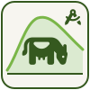

AGFF · Weideplanung

Interaktiver WeideplanerStandort und Tierkategorie wählen, System bestimmen, Betriebsdaten anpassen — alle Ergebnisse berechnen sich automatisch, wie im Excel-Original.
Schritt 1
Bestimmt automatisch Start der Weidephasen und Graszuwachs (Zeile A & B unten). Werte bleiben danach editierbar.
Verzehrsanteil Weide (Zeile E) automatisch anpassen: schaltet sich mit einer eingegebenen Weidefläche automatisch ein und setzt Zeile E je Phase so hoch, wie es Fläche und Graszuwachs (Zeile B) zulassen — die Felder in der Tabelle sind dann gesperrt. Ohne Weidefläche bleibt der Schalter aus und Zeile E zeigt die AGFF-Standardwerte (60/100/100/75 %).
Schritt 2
Schritt 3
Reduziert den Graszuwachs (Zeile B unten) je Phase und koppelt daran den in der Futterkosten-Auswertung effektiv erreichbaren Weideanteil. So lässt sich abschätzen, wie robust die Planung in einem Trockensommer ist. Hinweis: Dieses Modul ist eine Erweiterung des Nachbaus und nicht Teil der Original-Excel-Formeln.
Geglättete Kurve(n) durch die vier Phasenwerte von Zeile B: Normaljahr (grün, aus Schritt 1) und — im Dürre-Szenario zusätzlich — die reduzierte Kurve (braun). Punkte lassen sich per Drag & Drop verschieben — Normaljahr-Punkte passen den Standortwert an, Dürre-Punkte die Reduktion (%) unten. Tabelle und Auswertungen aktualisieren sich live.
Schritt 4
Dick hervorgehobene Felder (gelb umrandet) sind Auto-Vorschläge aus Schritt 1 — betriebsspezifisch anpassbar.
| Parameter / Rechnungsschritt | Vorweide | Frühlingsweide | Sommerweide | Herbstweide | |
|---|---|---|---|---|---|
| Grundlagen | |||||
| A | Start Weidephase | ||||
| B | Graszuwachs (kg TS/ha/Tag) | ||||
| C | Anzahl Tiere | ||||
| D | Totaler Tagesverzehr pro Tier (kg TS/Tier/Tag) | ||||
| E | Verzehrsanteil Weide während Vegetationsperiode (%) | ||||
| I | Weideruhezeit (Tage) | ||||
| Verzehr & Besatz | |||||
| F | Verzehr Weidefutter= E × D / 100 | ||||
| G | Besatzstärke (Tiere/ha)= B / F | ||||
| H | Flächenbedarf pro Phase (ha)= C / G | ||||
| Futterdichten | |||||
| J | Ziel Abtriebshöhe (kg TS/ha) | ||||
| K | Ziel Auftriebshöhe (kg TS/ha)= (G × F × I) + J | ||||
| L | Nutzbare Grasmasse (kg TS/ha)= K − J | ||||
| Weideparameter | |||||
| M | Flächenbedarf Herde/Tag (ha/Herde/Tag)= 1/L × C × F | ||||
| N | Flächenbedarf Tier/Tag (Aren/Tier/Tag)= M / C × 100 | ||||
| O | Besatzzeit (Tage) | ||||
| P | Koppelgrösse (ha)= M × O | ||||
| Q | Min. benötigte Koppeln= I / O | ||||
Ergebnis
Ø Flächenbedarf der Herde pro Tag über alle vier Phasen: – ha/Herde/Tag
Koppelgrösse und Mindestanzahl Koppeln für „Milchkühe“ — je Besatzzeit separat ausgewiesen: kürzester/längster AGFF-Richtwert (wie im Excel-Original) sowie 24 Stunden und 2 Tage als zusätzliche Referenzwerte, berechnet mit den aktuellen Betriebsdaten oben.
| Besatzzeit | Koppelgrösse Frühling (ha)= Flächenbedarf Herde/Tag (Frühling) × Besatzzeit | Koppelgrösse ganzjährig (ha)= Ø Flächenbedarf Herde/Tag × Besatzzeit | Min. Koppelanzahl= Ø Weideruhezeit (Frühling/Sommer) / Besatzzeit + 1 |
|---|
Ergebnis
Geschätzte Verteilung von Weide- und Stallfutter über das ganze Jahr, abgeleitet aus den Start-Weidephasen (Zeile A) und dem Verzehrsanteil Weide (Zeile E). Ausserhalb der Weidesaison wird mit 100% Stallfütterung gerechnet, mit dem Tierbestand der jeweils benachbarten Phase.
Balken zeigen den Gesamtbedarf pro Kalendermonat in Dezitonnen Trockensubstanz (dt TS). Kürzere Monate wie Februar (28 statt 30/31 Tage) fallen dadurch automatisch etwas kleiner aus, auch bei gleichbleibendem Tagesbedarf — kein Rechenfehler.
Hilfsmittel
Rechnet zwischen Bestandeshöhe (cm RPM, Klicks, cm Doppelmeter) und Futterdichte (kg TS/ha) um.
Link
Erzeugt einen Link mit Standort, Tierkategorie, Tierzahl, System und Szenario als URL-Parameter. Wer den Link öffnet, sieht dieselbe Ausgangskonfiguration schon vorausgewählt — praktisch zum Weiterleiten oder als Lesezeichen.